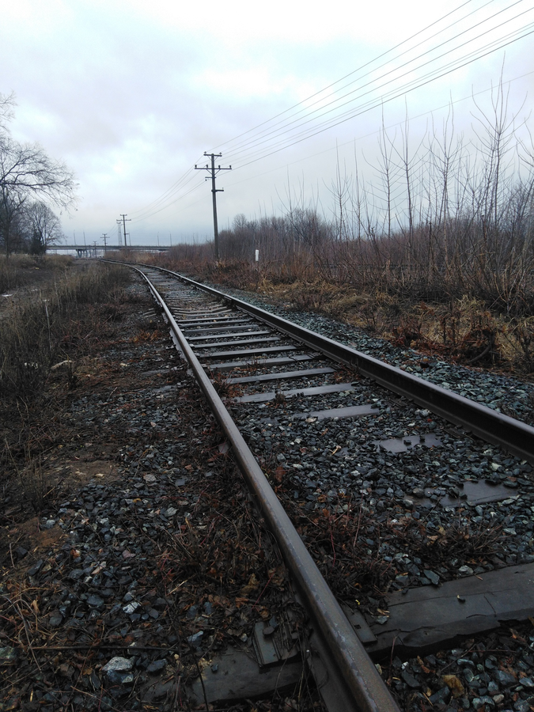

Вдалеке темная осень белеет.
Затяну горький дым сигарет,
А бетонные стенки чернеют
Сквозь туман разгляжу силуэт.
Разведем костер мы с тобою
Глубоко в себя мысли умчат.
Проведу по гитаре рукою,
Нежно струны её зазвучат.
В сердцах наших царствует холод.
Люди бьют, но мы держим удар
Этот мрачный и серый город
Не спасет нас с тобой никогда.
"Может город нас не спасет." -
Твой взгляд устремился в огонь.
"Сердце друга растопит лед" -
Положила на грудь мне ладонь.
Ты исчезла. Туман расступился,
И костер погас навсегда
Это сон ... Он мне просто приснился
Позабудется, жаль, сквозь года...
29102016
